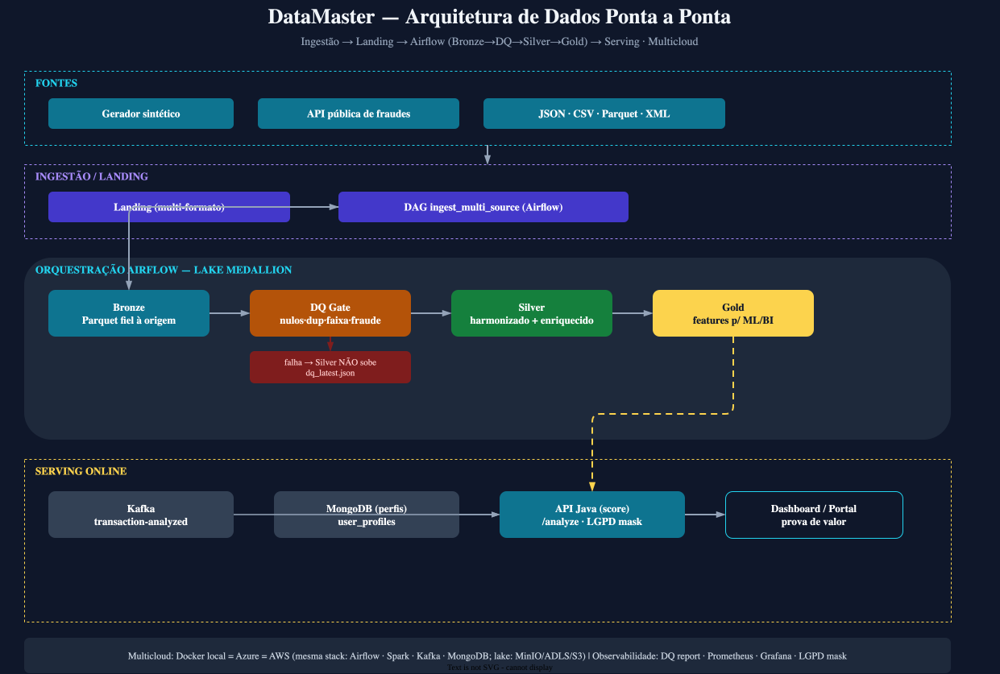
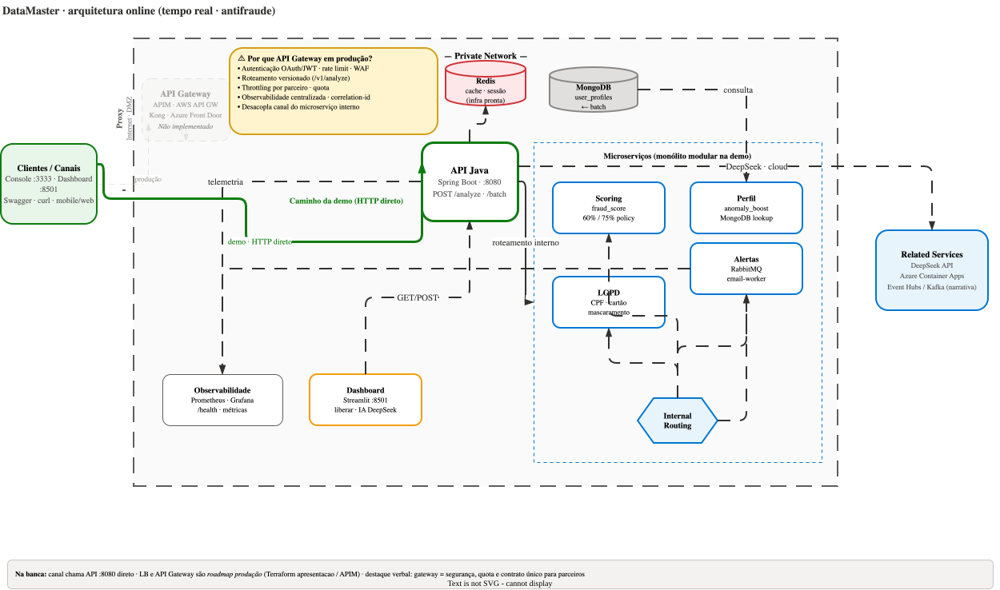
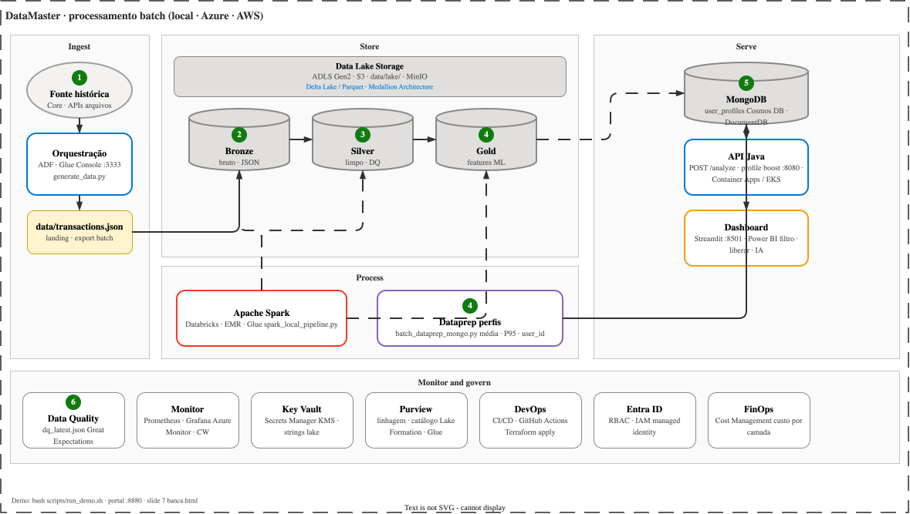

Quem apresenta
Cargo
Formação
Trajetória
O que atuei
Apresentação
Pipeline completo em três ambientes: demo ao vivo no Docker local (stack inteira) · Azure (terraform/apresentacao) · AWS (terraform/aws, ECS + S3). Mesma stack em todos — sem serviços equivalentes.
Visão do fluxo · do dado bruto ao alerta
Estratégia da apresentação
docker compose up -d --build — API, dashboard, console, Spark, Kafka, Kafka, Mongo, Grafana…infrastructure/terraform/aws/ — S3 + Kafka + MongoDB + Airflow + API (ECS)cd infrastructure/terraform/apresentacao && terraform apply — ADLS Medallion, Kafka, MongoDB, Key Vault, Monitor, Container Apps (API)enable_analytics_stack = false por padrão)docs/deploy/ · docs/arquitetura/datamaster-03-mapa.drawio
Ordem da apresentação
O fio condutor é o porquê de cada escolha — o nome da ferramenta só ilustra. Em cada etapa: problema → por quê → trade-off.
Roteiro em 8 passos · dado servido com qualidade e escala
Objetivo: plataforma de dados confiável — não só um modelo. Em cada camada, o que importa é o porquê da escolha.
| Requisito | Meta |
|---|---|
| Latência | < 2 s (score / alerta) |
| Precisão | Alto recall em fraude + controle de falso positivo |
| Escala-alvo | 10M+ transações/dia (picos com autoscaling) |
| Disponibilidade | 99,9% SLA (camada crítica) |
| Conformidade | LGPD ponta a ponta |
Visão de plataforma
Ingestão → lake Medallion → governança → ML → API → consumo. Na mesa, o mesmo desenho roda no Docker.
Batch + online · visão geral (Medallion)

data/lake/ + MinIO.user_profiles.governanca.yaml.✅ Etapa 1 · Extração de dados
generate_data.py + console :3333 simulam o core; transaction_adapters.py normaliza simulador, fila (Kafka / Kafka) ou CSV para o dicionário do modelo.event_hub_producer.py.✅ Etapa 2 · Ingestão de dados
/analyze, a API publica o fato transaction-analyzed de forma assíncrona (categoria, CPF, card_last4) — o HTTP não espera o broker.batch_dataprep_mongo.py: agrega histórico → MongoDB/Mongo para a API consultar online.✅ Camada online · tempo real
Desenho estilo referência microserviços. Na demo, canal chama a API :8080 direto; Load Balancer e API Gateway ficam apagados (roadmap produção).
Private Network · microserviços · caminho demo em verde

POST /analyze responde score; em paralelo publica transaction-analyzed no Kafka.02_kafka_consultas_dia · GET /events/analyzed.✅ Etapa 3 · Processamento batch
Mesmo desenho de referência Azure (Data Factory + ADLS + Databricks + serving), mapeado para a demo DataMaster e equivalências AWS.
Ingest · Store · Process · Serve · Monitor and govern

generate_data.py / console :3333 (ADF · Glue na nuvem).spark_local_pipeline.py — Bronze (JSON) → Silver (harmonização/DQ) → Gold (features ML) em data/lake/.batch_dataprep_mongo.py agrega por user_id → MongoDB user_profiles (MongoDB na Azure)./analyze; dashboard :8501 consome scores e fila de revisão.data/lake/reports/dq_latest.json, Prometheus/Grafana, Key Vault, Purview (Terraform apresentacao/).docs/arquitetura/datamaster-01-batch-medallion.drawio · PNG: datamaster-01-batch-medallion.png.data/lake/ (bronze/silver/gold).✅ Etapa 3 · Armazenamento (detalhe)
medallion_job.py (bronze → dq → silver → gold) · Airflow — Bronze intacto → Silver harmonizado → Gold ML.user_profiles para /analyze — serving online de perfil de risco.✅ Camada batch · perfis para serving online
Dois braços da arquitetura Medallion: batch materializa comportamento histórico; speed consulta na análise em tempo real.
data/transactions.json (simula exportação histórica / landing Bronze).scripts/batch_dataprep_mongo.py — média, desvio, P95, categorias típicas, % internacional.user_profiles — na Azure, MongoDB (MongoDB) com mesma ideia.profile_anomaly_boost ao score de fraude.is_fraud, API publica em Kafka (fraud.alert.email); serving API envia SMTP sem bloquear o HTTP — doc docs/online/VISAO_GESTAO.md.1.0.0-java-balanced · is_fraud se score ≥ 0,74 (~5–15% em lote típico).✅ Etapa 4 · Observabilidade
/health, latência do /analyze, taxa de erro / target UP.docker logs · nuvem Log Analytics / Logs Insights. APM comercial (Dynatrace etc.) = mesma classe do App Insights.✅ Etapa 5 · Segurança de dados
✅ Etapa 6 · Mascaramento de dados
DataMasker + POST /api/v1/lgpd/mask: CPF, e-mail, telefone, nome, cartão — um controle na borda da API.✅ Etapa 7 · Arquitetura de dados
user_profiles no Mongo / MongoDB — API não faz full scan no lake a cada tx. Gold = retreino; perfil = /analyze.governanca.yaml + /data-quality/report + notebook DQ.✅ Etapa 8 · Escalabilidade
Demonstração ao vivo
Antes de começar (T0-pré): Azure em paralelo. Na mesa: (1) tour de todos os componentes — docker compose ps — (2) demo de fraude T1–T7.
cd infrastructure/terraform/apresentacao && terraform applydeploy-azure disparado no push da branchdocker compose up -d --build (local — obrigatório na mesa)/batch/profile-stats > 0)POST …/analyze com user_id (perfil histórico)anomaly_reasons no JSONPOST …/transactions/batch (carga na API)transaction-analyzed + consumer · dashboard/Jupyter do dianotebooks/01_dataprep_dq.py + Spark Medallionbatch_dataprep_mongo.py (slide batch→Mongo→API):9090 · Grafana :3000bash scripts/run_demo.sh · validar lake + perfis (fluxo completo)# Analyze com perfil Mongo (complementa T5–T6)
curl -s -X POST http://localhost:8080/api/v1/transactions/analyze \
-H "Content-Type: application/json" \
-d '{"amount":50000,"merchant_category":"Viagem","user_country":"BR","merchant_country":"US","payment_method":"CREDIT_CARD","hour":3,"is_weekend":1,"is_international":1,"user_id":"user_1001"}'| Função | Azure / AWS (mesma stack) |
|---|---|
| Streaming ingestão | Kafka (Kafka / MSK) |
| Alerta assíncrono | Kafka + worker (mesma stack nos 3 ambientes) |
| Lake objeto | ADLS Gen2 (S3) |
| Governança / catálogo | Purview (Lake Formation + Glue Catalog) |
| Orquestração ETL | Data Factory (Glue Workflow / Step Functions) |
| Spark | Azure Databricks (EMR / Glue Spark) |
| DW / SQL analítico | Synapse / Fabric (Redshift / Athena) |
| NoSQL wide-column | MongoDB |
| ML treino & deploy | Azure ML (SageMaker) |
| Secrets | Key Vault (Secrets Manager / SSM / KMS) |
| Métricas & logs | Monitor / Log Analytics (CloudWatch / Logs Insights) |
| Tracing APM | Application Insights (X-Ray / OpenTelemetry) |
| Containers orquestrados | AKS / Container Apps (EKS / ECS / Fargate) |
Obrigado
Da coleta ao valor — obrigado a todos